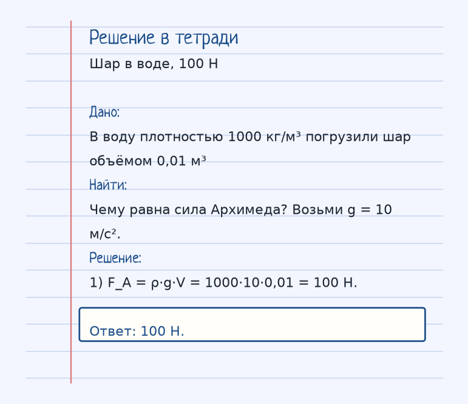

Держи картинку, не строчку. Если можешь показать рукой, куда едет тело и что его толкает, формула уже почти твоя. Ниже — как устроена тема «Закон Архимеда», где обычно спотыкаются, и два разбора до ответа.
Показ к теме. Это условие, не шпаргалка.
Сначала смысл
На тело, погруженное в жидкость (или газ), действует выталкивающая сила, равная весу вытесненной жидкости.
На тело в жидкости или газе действует выталкивающая сила, направленная вверх. Закон Архимеда задаёт её величину: она равна весу вытесненной жидкости, F_A = ρ·g·V. Здесь ρ — плотность жидкости, а не тела, V — объём погружённой части, g — ускорение свободного падения.
В типовой задаче вода имеет плотность 1000 кг/м³, объём шара 0,01 м³, и берут g = 10 м/с²: F_A = 1000·10·0,01 = 100 Н. Масса шара в эту формулу не входит. От массы зависит, всплывёт тело или утонет, но это уже сравнение веса и архимедовой силы.
Когда заходишь в ванну, уровень растёт ровно на объём погружённой части. Вес этой «лишней» воды и есть сила, которая тебя выталкивает.
Как решать. Выпиши величины с рисунка к примеру «Шар в воде, 100 Н». Условие: В воду плотностью 1000 кг/м³ погрузили шар объёмом 0,01 м³. Чему равна сила Архимеда? Возьми g = 10 м/с². Дальше подставляй их в формулу этой темы и сверяй шаги с решением под картинкой — оно закрыто, пока не попробуешь сам. Второй рисунок, «Погружена только половина», тот же приём на других данных: Тело объёмом 0,008 м³ плавает в воде (ρ = 1000 кг/м³) так, что погружена половина. Найди силу Архимеда при g = 10 м/с². Если оба примера сходятся, тему можно нести на контрольную.
Как читать формулу
F_A = ρ · g · V
ρ — плотность жидкости, V — объем погруженной части тела.
ρ — плотность жидкости (кг/м³), V — объём погружённой части (м³), g — ускорение свободного падения.
Чтобы осталось в голове
Когда ты заходишь в ванну, уровень воды поднимается. Сила, с которой вода выталкивает тебя, равна весу этой вытесненной воды.
В ванне уровень поднимается на объём погружённой части тела. Выталкивающая сила равна весу этой вытесненной воды.
Где обычно спотыкаются
В F_A = ρ·g·V плотность — жидкости, объём — погружённой части, а не обязательно всего тела. Массу тела в формулу не ставят.
Дальше две задачи. Сначала схема. Когда сам набросаешь ход, открой тетрадь — там дано, перевод в СИ, шаги и ответ в рамке.
Разбор 1
Шар в воде, 100 Н
В воду плотностью 1000 кг/м³ погрузили шар объёмом 0,01 м³. Чему равна сила Архимеда? Возьми g = 10 м/с².
На схеме только условие. Ответа там нет — его ещё надо получить.
Смотри на порядок, не на красивое число: сначала единицы, потом формула, потом ответ.
Дано. В воду плотностью 1000 кг/м³ погрузили шар объёмом 0,01 м³
В СИ.
Найти. Чему равна сила Архимеда? Возьми g = 10 м/с².
Решение.
F_A = ρ·g·V = 1000·10·0,01 = 100 Н.
100 Н.

Разбор 2
Погружена только половина
Тело объёмом 0,008 м³ плавает в воде (ρ = 1000 кг/м³) так, что погружена половина. Найди силу Архимеда при g = 10 м/с².
На схеме только условие. Ответа там нет — его ещё надо получить.
Смотри на порядок, не на красивое число: сначала единицы, потом формула, потом ответ.
Дано. Тело объёмом 0,008 м³ плавает в воде (ρ = 1000 кг/м³) так, что погружена половина
В СИ.
Найти. Найди силу Архимеда при g = 10 м/с².
Решение.
В формулу входит объём погружённой части: V = 0,004 м³.